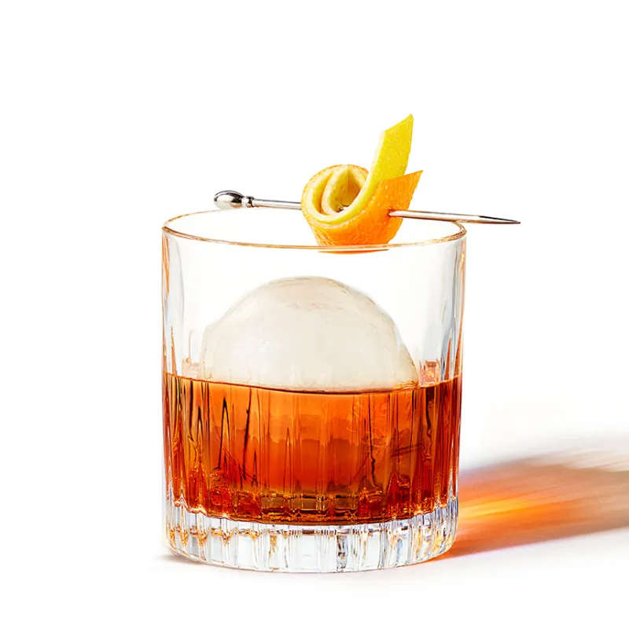

Old Fashioned (from Jim Beam)
Disclaimer: This is not my recipe. It was copied from the source
credited below for the purpose of practicing site building.

Credit: Jim Beam Website
Ingredients
- 2 parts Jim Beam
- 1/4 part Simple or Demarara Syrup
- 3 dashes Angostura
- Garnish with Orange Peel, oils expressed over drink
Instructions
- Measure: In a mixing glass with ice, add 1/4 part of Simple
or Demerara Syrup, 2 parts Jim Beam, and 3 dashes of
Angostura bitters.
- Stir: Gently stir a few times to mix the ingredients, and
then straining into a rocks glass with ice.
- Garnish: Squeeze an orange peel over the cocktail to release
its oils, and garnish drink with the same peel.
Serve and enjoy your delicious Old Fashioned made with Jim Beam bourbon!